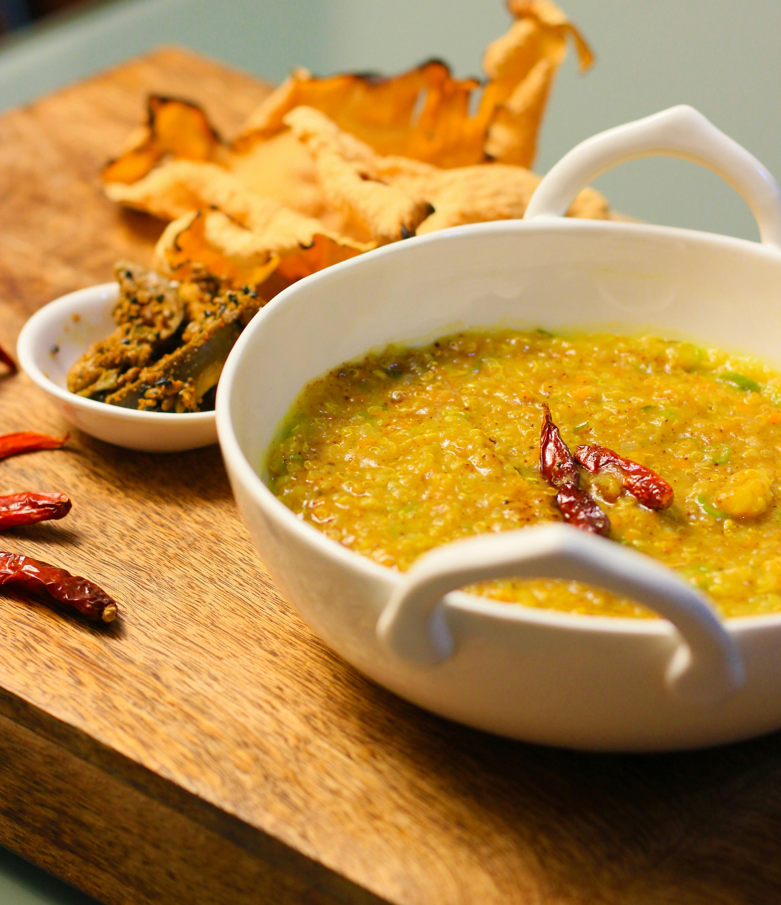

Ingredients
- 1 cup rice
- 1/2 cup toor dal (split pigeon peas)
- 1/2 cup mixed vegetables (carrots, peas, beans, potatoes, etc.), chopped
- 1 onion, finely chopped
- 2 tomatoes, chopped
- 2 tablespoons tamarind pulp
- 3 tablespoons bisi bele bath powder (available in stores or homemade)
- 1/4 teaspoon turmeric powder
- Salt to taste
- Water as needed
- Chopped coriander leaves for garnish
- For tempering (tadka):
- 2 tablespoons ghee or oil
- 1 teaspoon mustard seeds
- 1 teaspoon cumin seeds
- A pinch of asafoetida (hing)
- Curry leaves
Process
- Wash the rice and toor dal separately. Soak the rice for about 15-20 minutes
- In a pressure cooker, cook the soaked rice and toor dal with enough water until they are soft and mushy. You can also cook them in a pot, but it will take longer
- In a separate pan, heat ghee or oil for tempering
- Add mustard seeds and let them splutter. Then add cumin seeds, asafoetida, and curry leaves
- Add chopped onions to the pan and sauté until they turn translucent
- Add chopped tomatoes and cook until they become soft and mushy
- Add the mixed vegetables to the pan and sauté for a few minutes
- Add tamarind pulp, bisi bele bath powder, turmeric powder, and salt. Mix well
- Add water to the pan to achieve the desired consistency (similar to a thick soup). Bring it to a boil and let it simmer for a few minutes until the vegetables are cooked
- Once the vegetables are cooked, add the cooked rice and dal mixture to the pan. Mix everything together gently
- Adjust the seasoning if needed and let the bisi bele bath simmer for a few more minutes to blend the flavors
- Garnish with chopped coriander leaves